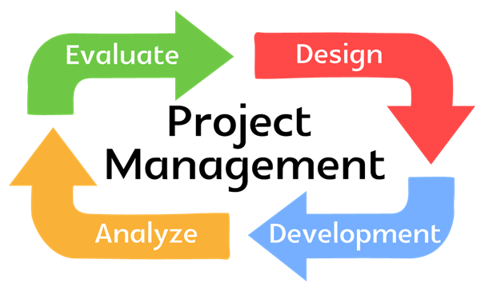

Product & Services
- Mobility Enterprise Solutions
- Shared Services for Manufacturing companies,Education institutions
- Software Development & Implementation
- Back office Management
- Software Support
- Solution Architecture
- Project Management
- Consultancy Services
- Resource Engagement
- Transitions
- Digital Management
- Business Intelligence
Software Development
Our practise is to understand customer’s requirement and evaluate the products & platform based on requirement.This should be quality and cost effective. Being in to Software for more than twodecades ,we are experts in to various business domains & Industries functionality.
we have built our competencies and with our proven delivery model and expertise we provide quality and cost effective application development services that meets your business needs.
The professionals are well experienced and trained on latest development tools and havingwide technology knowledge on various IT platforms which leads quality & timely deliverables.
We have core expertise in supporting Application Development , Application Maintenance , Application Operation , DevOps Model.
Our Services are focus on to development using varous technologies viz .. SAP ABAP , .Net , ASP .Net , MVC , Mobility Framework , SQL etc.
Advantage
The client can benefit greatly from the following.
- Consulting approach leads to proper guideline to the customer.
- End to End solution will ease the life of Customer
- Experienced and dedicated team of professionals trained in their line of business
- Shared Services Reduces overall cost of the customer. We are having proper development centre to customer need.
- Round the clock support for application maintenance support based on defined SLA
Solution Architecture
We are focused Business Solution Group (ERP), Responsible for reviewing internal business processes, interactingwith Key Users and functional consultants for Requirement understanding, scopingand suggestion. Goal is to provide feasible solution through ERP & consultancy.
We provide End to End IT Solution implementation which covers all the areas of IT Implementation.
We have vast experience in understanding high level business process and requirements analysis, architecting solutions utilizing appropriate technologies across various Functionalities, components and application areas, creating solution definitions, functional specification and design documents as required. Overseeing developments, implementations, rollouts, support etc.
Transition Management
Transitioning IT services in an outsourcing engagement can be complex task. Effective IT transition management ensures your environment is integrated in a seamless manner with a focus on maximizing business availability.
We at Sunyukt take an approach which adheres on Maintaining the Integrity ,quality and involves details Planning starting Boot Camping , Planning & Preparation , Execution Approach and milestones , Benefit Case & Analysis , Benefit ratio on YOY chart which are the mandatory parts of Transition management.
During actual transition, we take each aspect very promptly resulting a proper transition within the defined timelines.
- Experience Resource engagement, Training & knowledge Transfer, Shadow & Reverse Shadow approach and unique approaches we at Sunyukt adheres to.
- Establishing a joint governance structure and implementing it with the help of Client is key elements of Soliciting the client’s ongoing commitment to supporting positive change to benefit not only technology, but also processes and organizational behaviour.
- Implementing a communications plan to maintain focus on service delivery and personnel communication
- Detail boot camping and then the documentation of understanding takes transition to smoot way approach.
- Regular reviews & Monitoring is followed very strictly to understand the progress of Transition and also to mitigate the risk of eliminating activities & Milestones defined.
- We takes up the responsibility to make sure that all the key process , Management aspects , activities plans are covered and are properly been shadowed to off-shore team.
- We follow ITIL Transition approach to implement transition Management.
Project Management in SAP & Mobile Enterprise Management
Key Stakeholders in this organisation are having wide experience in Project Management in to Core IT & SAP Technology for more than two Decades. We have Certified Project Management Professionals & Price2 and follow SAP ASAP to implement SAP.
We are focused Business Solution Group (ERP), Responsible for reviewing internal business processes, interactingwith Key Users and functional consultants for Requirement understanding, scopingand suggestion. Goal is to provide feasible solution through ERP& consultancy.
We have vast experience in understanding high level business process and requirements analysis, architecting solutions utilizing appropriate technologies across various SAP components and application areas, creating solution definitions, functional specification and design documents as required. Overseeing developments, implementations, rollouts, support etc.
Translate business requirement in to custom solutions specifications for complex and large projects.
Provide directions to development teams for custom solutions realization and participate as necessary in coding, testing , documentation , go-live and maintenance support activities.
Effective change management on projects by analyzing the impact of any new requirement on project scope and timelines. Guide and influence team members to accomplish the team’s technical and schedule goals.
Re-engineered the information technology section by adapting new technology solutions which enables users process improvement and increase efficiency.
We follows SAP Best Practises & New innovations to benefit our customers.
We are Specialized in Service Delivery , Program & People Management , Service Transition Management , Release Management , Project Management , Competency Building , Proposal Planning etc.

Service Management
We provides best practices for aligning IT with business needs. The most widely used framework for IT process management is ITIL v3, which has five parts: Strategy, Design, Transition, Operations and Continual Service Improvement. Ongoing development for ITIL has been vested in Axelos.